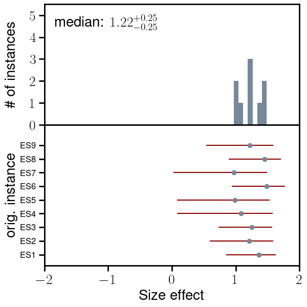
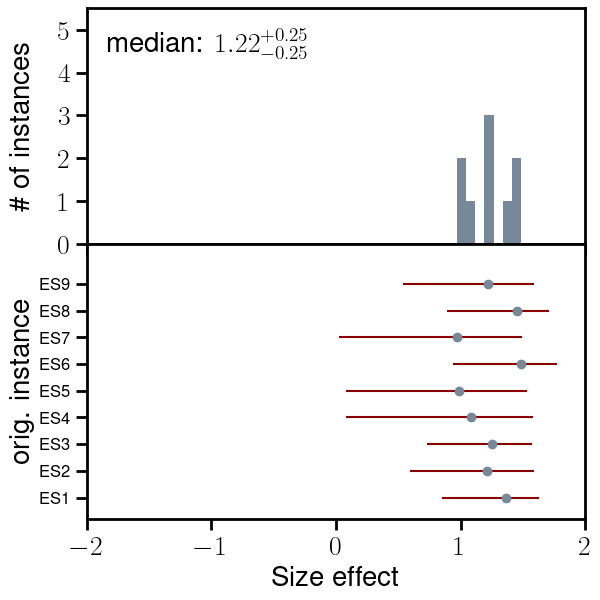

el Corpus del Español REAL
This project is maintained by cristinae
Elote, Choclo and Mazorca: on the Varieties of Spanish
Spanish is one of the most widespread languages in the world: it is official language in 20 countries and the second most-spoken native language. Its contact with different coexistent languages and the rich regional and cultural diversity has produced varieties which divert from each other. Still, available corpora and models trained upon them, generally treat Spanish as one monolithic language, which dampers prediction and generation power when dealing with different varieties. CEREAL aims at alleviating the situation by compilling documents from the Web with annotations for 24 countries of origin.
Figura de ejemplo no puedo hacerla grande

Cultural effects in embeddings

 

Download the data
Tabla de ejemplo
| Document Level (#docs) | Fragment Level (#frags) | Embeddings (vocab) | |||||
|---|---|---|---|---|---|---|---|
| Country | Code | CEREAL | CEREALex | CEREAL | CEREALex | CEREAL | CEREALex |
| Andorra | ad | 1,551 | — | 13,023 | — | 2,672 | — |
| Argentina | ar | 1,969,559 | 2,713,759 | 20,958,972 | 33,854,130 | 284,192 | 532,890 |
| Bolivia | bo | 74,673 | — | 976,031 | — | 53,800 | — |
| Chile | cl | 1,115,516 | 1,095,185 | 12,100,443 | 10,077,118 | 199,494 | 307,846 |
| Colombia | co | 649,991 | — | 8,331,461 | — | 163,213 | — |
| Costa Rica | cr | 59,069 | — | 826,332 | — | 45,894 | — |
| Cuba | cu | 116,390 | — | 1,921,505 | — | 82,276 | — |
| República Dominicana | do | 113,676 | — | 1,184,014 | — | 52,410 | — |
| Ecuador | ec | 157,755 | — | 1,624,840 | — | 64,313 | — |
| España | es | 5,714,316 | 15,689,557 | 70,458,818 | 192,199,885 | 596,843 | 1,428,724 |
| Guinea Ecuatorial | gq | 801 | — | 4,055 | — | 1,699 | — |
| Guatemala | gt | 51,273 | — | 561,899 | — | 35,861 | — |
| Honduras | hn | 59,662 | — | 656,485 | — | 35,708 | — |
| México | mx | 2,443,404 | 3,314,396 | 20,883,245 | 39,410,541 | 250,314 | 489,705 |
| Nicaragua | ni | 36,880 | — | 405,986 | — | 31,346 | — |
| Panamá | pa | 39,027 | — | 449,172 | — | 31,269 | — |
| Perú | pe | 441,513 | — | 5,069,664 | — | 122,885 | — |
| Filipinas | ph | 109 | — | — | — | 406 | — |
| Puerto Rico | pr | 11,972 | — | 128,110 | — | 15,063 | — |
| Paraguay | py | 66,438 | — | 775,578 | — | 46,514 | — |
| El Salvador | sv | 41,037 | — | 401,553 | — | 29,434 | — |
| United States | us | 21,746 | — | 378,458 | — | 34,369 | — |
| Uruguay | uy | 153,713 | — | 1,805,013 | — | 75,492 | — |
| Venezuela | ve | 109,084 | — | 1,202,227 | — | 59,335 | — |
| Mix | mix | — | 4,866,901 | — | 61,908,112 | — | — |
| All | all | 13,449,155 | 27,679,798 | 151,116,884 | 337,449,786 | 736,896 | — |
The table above shows the statistics (number of documents and unique sentences per language) and the Zenodo download links for CEREAL and CEREALex. The link to the word embeddings built with the sentence level corpus is also added with their vocabulary. Notice that the embeddings are estimated after cleaning the sentence level corpus which is provided only after deduplication and in alphabetical order.
Download the models
The classification models trained with our document-level classifier are hosted by HuggingFace.
The table above links to the word embedding models per country and configuration. In order to reproduce the work in XXXX, we also provide embeddings to the 24 Spanish varieties with two additional seeds (seed 2, seed 3), and five embedding models for Peninsular Spanish differing in the training data.
Download the code
Visit the Github repositories containing the code for the document level classifier, the stylistic analysis and the analysis of human biases with CA-WEAT lists.
Citations
Please, use the following bibtex entries when citing this research work
@InProceedings{espana-bonet-barron-cedeno-2024,
title = "Elote, Choclo and Mazorca: on the Varieties of Spanish",
author = "Espa{\~n}a-Bonet, Cristina and Barr{\'o}n-Cede{\~n}o, Alberto",
booktitle = "Proceedings of the 2024 Annual Conference of the North American Chapter of the Association for Computational Linguistics",
month = jun,
year = "2024",
address = "Mexico City, Mexico",
publisher = "Association for Computational Linguistics",
url = "https://aclanthology.org/",
pages = "--"
}
@InProceedings{espana-bonet-et-al-2024,
title = " When Elote, Choclo and Mazorca are not the Same. Isomorphism-based Perspective to the Spanish Varieties Divergences ",
author = "Espa{\~n}a-Bonet, Cristina and Bhatt, Ankur and Dutta Chowdhury, Koel and Barr{\'o}n-Cede{\~n}o, Alberto",
booktitle = "Proceedings of the eleventh Workshop on NLP for Similar Languages, Varieties and Dialects (VarDial)",
month = jun,
year = "2024",
address = "Mexico City, Mexico",
publisher = "Association for Computational Linguistics",
url = "https://aclanthology.org/",
pages = "--"
}